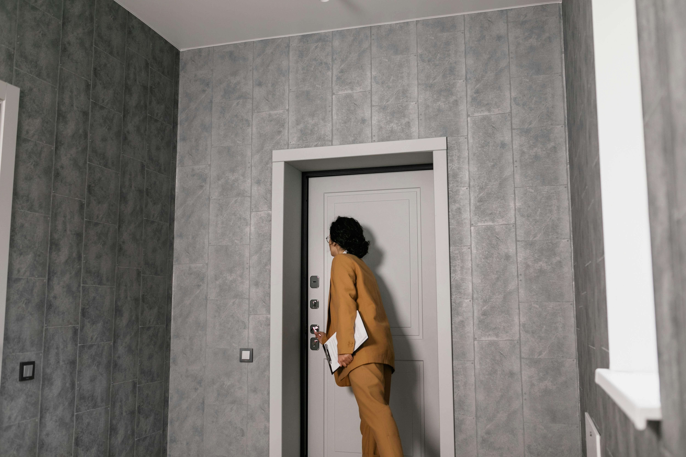

(833)
PROBAID
7762243

CONSERVATOR DOESN’T LIVE LOCALLY. HOW I MANAGE EVERYTHING ON-SITE

One of the most common challenges in conservatorship real estate is when the conservator does not live anywhere near the property. This situation creates problems for everyone involved. Vendors cannot get access. The property is left unchecked for weeks or months. Attorneys begin receiving calls they should not have to handle. The conservator feels stuck, overwhelmed, and alone. And most importantly, the property sits vacant, unprepared, and vulnerable.
This delay often creates unnecessary stress and financial risk. Vacant homes are magnets for issues like break-ins, leaks, damage, or even squatters. At the same time, families start to lose patience, attorneys get dragged into logistics, and the conservator struggles to fulfill their responsibilities.
That is where I step in. My role is to be the conservator’s presence on-site. I act as their boots on the ground, eyes on the property, and hands in motion. I secure the home, coordinate vendors, provide real-time updates, and make sure every action aligns with the legal requirements. This allows the conservator to focus on their duties without worrying about the day-to-day property management.
Below, I will explain how I handle long-distance conservatorship cases and why attorneys and conservators trust me to manage the real estate process with professionalism, clarity, and accountability.
SECURING THE PROPERTY IMMEDIATELY
The first and most important step is securing the home. Vacant properties are vulnerable from the moment they are left unattended. They can attract squatters, burglars, or vandals. Weather-related damage, like burst pipes or roof leaks, can go unnoticed until it is too late. Even something as simple as piled-up mail can signal that the home is empty, creating both safety and liability issues.
When I am brought into a case, I do not wait for someone to fly in or figure it out later. Securing the property is always my first priority. I handle lock changes, set up coded lockboxes, and coordinate security measures. I also ensure utilities are managed properly, so the property remains safe while avoiding unnecessary costs. If vacant property insurance is needed, I flag it immediately.
Once the property is secure, I document everything with photos, videos, and written condition reports. The conservator receives a full picture of the property’s status without having to leave their home. This not only brings peace of mind but also prevents costly issues before they start.
COORDINATING ALL VENDORS PERSONALLY
Another major challenge for long-distance conservators is vendor coordination. Cleanouts, repairs, inspections, and compliance tasks all require someone to meet contractors on-site. Without a local representative, these tasks are delayed, creating friction with court timelines and legal requirements.
I take ownership of this entire process. I do not simply provide names or phone numbers. I schedule, meet, and oversee every vendor personally. Whether it is junk removal, locksmiths, cleaning crews, hazard insurance inspectors, or city compliance officers, I am the one on-site ensuring the job is done right.
Every service is documented with receipts, photos, and completion reports. This protects the conservator legally and ensures attorneys have the documentation they need if questions ever arise. Instead of a long-distance conservator scrambling to manage logistics, everything is handled with precision and accountability.
PROVIDING REAL-TIME UPDATES AND VISUALS
Most out-of-town conservators want one thing above all else: peace of mind. They want to know what the property looks like, what work has been done, and what issues might need attention.
I provide consistent updates that eliminate uncertainty. Every major task is backed up with photos and video. Progress reports are clear, concise, and sent without delay. Conservators do not have to chase me for answers. Instead, I anticipate their questions and provide updates before they even ask.
This level of communication builds trust and helps conservators feel as if they are managing the property in person, even if they are thousands of miles away. Attorneys also benefit from this approach because they no longer get bombarded with update requests from anxious conservators.
ALIGNING REAL ESTATE WITH LEGAL STRATEGY
One of the most overlooked aspects of conservatorship real estate is how property tasks can accidentally conflict with the legal side of the case. For example, scheduling a cleanout or making repairs before authority is confirmed can cause problems in court. On the other hand, waiting too long to act can create financial or safety risks.
This is why I always align my actions with the attorney’s strategy. I never make assumptions or move forward without considering the legal framework. If court approval is required, I work within that timeline. If authority has been granted, I make sure the conservator knows how to use it properly.
My role is to move quickly, but never recklessly. Attorneys trust me because I know how to balance efficiency with compliance, which keeps the case on track without creating new issues.
HANDLING THE ENTIRE PROCESS LIKE THEY ARE IN TOWN
The ultimate goal is simple. I make the conservator feel as if they are present and managing everything, even when they are far away. I become the local representative they can trust, managing the property from start to finish while keeping them fully informed.
I handle cleanouts, coordinate photography, prepare valuations, market the property, educate buyers about conservatorship rules, and manage escrow. Throughout the process, I keep the conservator and attorney in the loop with clear updates. Nothing falls through the cracks, and no one feels left out of the decision-making.
By the time the property is ready for sale, everyone involved feels confident because every detail has been handled with care and transparency.
WHY THIS MATTERS FOR ATTORNEYS
Attorneys are often the ones who feel the most pressure in long-distance conservatorship cases. When the conservator cannot be present, families naturally turn to the attorney for help. Suddenly, the attorney is fielding questions about locksmiths, junk removal, and home repairs. None of this is legal work, yet it creates extra stress and delays.
By stepping in, I remove that burden entirely. Conservators know who to call, families stay informed, and attorneys are protected from being dragged into logistics they should not have to manage. This keeps the case clean, professional, and efficient.
REAL-WORLD EXAMPLE
I recently managed a conservatorship property where the conservator lived across the country. The home had been vacant for months, and neighbors were starting to complain. Break-ins were becoming a real concern. The attorney was receiving constant emails about how to handle the situation.
When I stepped in, the first step was securing the property. I changed the locks, installed coded access, and arranged for utilities to be managed. Next, I coordinated a cleanout with photos and videos sent directly to the conservator. I then brought in vendors for minor repairs, handled insurance requirements, and positioned the property for sale.
Throughout the process, the conservator never had to leave their home. They received real-time updates, trusted the work was being done correctly, and had peace of mind. The attorney was relieved of logistical headaches, and the case moved forward smoothly.
BOTTOM LINE
Long-distance conservatorship cases do not have to be stressful or delayed. With the right partner on-site, everything can move forward without unnecessary conflict or confusion.
When I manage conservatorship properties, I secure the home, coordinate vendors, provide real-time updates, and align everything with the legal process. I act as the conservator’s trusted presence on the ground while protecting the attorney’s time and keeping the property on track.
If you are dealing with a conservatorship where the conservator does not live locally, I am ready to handle everything on-site. You focus on your role. I will take care of the rest.
NEED A LOCAL PRESENCE FOR YOUR CONSERVATORSHIP PROPERTY?
Distance should never be the reason a conservatorship case stalls. I am on-site, fully accountable, and ready to manage everything from securing the property to closing escrow. Let’s connect today.
 833PROBAID.com
833PROBAID.com
 Info@833PROBAID.com
Info@833PROBAID.com
Because when the conservator can’t be there—I am.